直近1週間の人気フィード
はてなブックマーク数を元に新着優先で並べ替え
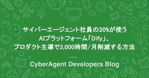
サイバーエージェント社員の20%が使うAIプラットフォーム「Dify」、プロダクト主導で3,000時間/月削減する方法 461
461 CyberAgent Developers Blog | サイバーエージェント デベロッパーズブログ
CyberAgent Developers Blog | サイバーエージェント デベロッパーズブログ
昨今、生成AIの活用による業務効率化の取り組みは激しくなっています。皆さんの中にも、「自社でもAIを ...
3日前
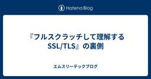
『フルスクラッチして理解するSSL/TLS』の裏側 200 エムスリーテックブログ
エムスリーテックブログ
【デジカルチーム ブログリレー6日目】デジカルチームの末永です。5月31日から開催される技術書典18で頒布するエムスリーテックブック8の、フルスクラッチして理解するSSL/TLSという章を担当しました。この章では、標準ライブラリ縛りでTLS 1.3のサーバーサイドを実装していきます。 techbookfest.org ここでは執筆の流れや小話などの裏側を書いていきます。
3日前
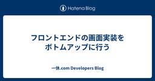
フロントエンドの画面実装をボトムアップに行う 89 一休.com Developers Blog
一休.com Developers Blog
概要 初めまして、CTO室のいがにんこと山口(@igayamaguchi)です。一休.com/Yahoo!トラベルのフロントエンドの開発を担当しています。 この記事ではWebアプリケーションのフロントエンドの画面実装をボトムアップに実装することのメリットと、その方法を紹介します。 ボトムアップに画面を実装する ボトムアップに画面を実装する、というのは小さなコンポーネントや処理から実装をしていき、それを組み合わせて徐々に大きなコンポーネントを作り、最終的に画面を作る実装方法です。 昨今のWebアプリケーションの実装で使用するReactやVueといったフレームワークはHTML、CSS、JavaSc…
2日前
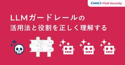
LLMガードレールの活用法と役割を正しく理解する 152 GMO Flatt Security Blog
GMO Flatt Security Blog
TL;DR LLMガードレールはLLMの入出力を監視・制御する技術であり、LLMアプリケーションにおける様々な脅威への対抗策になります。しかし、あくまで役割は脅威の緩和・低減であるため、それぞれの脅威に対する根本的な対策をした上で、万が一の事故に備え文字通りガードレールとして導入する必要があります。 本文中では、RAGアプリケーションの利用する外部データベースにプロンプトインジェクションを引き起こすデータが存在し、LLMに対する入力として利用された場合、LLMガードレールで検知する例を紹介しています。しかし、根本的には外部データベースに悪意あるデータが登録されないよう対策すべきです。 このブロ…
3日前
DX化とAI業務利用の共通点～ワークフロー変革こそが生産性向上の鍵～ 39 RAKUS Developers Blog | ラクス エンジニアブログ
RAKUS Developers Blog | ラクス エンジニアブログ
自己紹介 ラクスでPdMをしております。@keeeey_mと申します。 現在の担当商材は、楽楽シリーズ(楽楽精算、楽楽明細、楽楽電子保存)を担当しており、個人としては楽楽精算×AIの担当、 楽楽明細・楽楽電子保存PdMチームのリーダーをしております。 この記事を書いたきっかけ プロダクトマネージャーとして日々業務に携わる中で、ChatGPTやCopilot、CursorなどのAIツールを積極的に活用してきました。 個人レベルでの生産性向上は確実に実感していたものの、ある日ふと気づいたことがありました。 「人を動かすことの方が圧倒的に時間と労力を要する」という現実です。 この気づきを上司に話をし…
16時間前
DifyワークフローでDeepResearchを実現する 70 Taste of Tech Topics
こんにちは、クラウドエンジニアの青山です。 最近、何か調べたいときには、通常の検索エンジンではなく、生成AIに聞くことが習慣になってきています。 調べたいことが分かりやすく得られるので、最近の生成AIの発展には、驚くばかりです。とはいえ、単純な検索ではなく、関係するような情報をいろいろ調べたりするのは、生成AIを使っても時間がかかりますよね。 そこで有用なのが、ユーザーの質問に対して、より広く深く考察しながら、回答をしてくれる「DeepResearch」だと思います。 いろいろな生成AIサービスで、この機能が登場してきていますが、今回この「DeepResearch」の機能を、Difyを使って実…
3日前
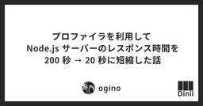
プロファイラを利用して Node.js サーバーのレスポンス時間を 200 秒 → 20 秒に短縮した話 37 ダイニーなプロダクト
ダイニーなプロダクト
どんな問題を解決したのかこんにちは、ダイニーの ogino です。続きをみる
2日前
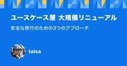
ユースケース層 大規模リニューアル：安全な移行のための3つのアプローチ 58 Techtouch Developers Blog
テックタッチは最近クリーンアーキテクチャにおけるユースケース層の大規模なリニューアルを行いました。本記事では、リニューアルの際に工夫した内容を簡単に紹介します。
2日前
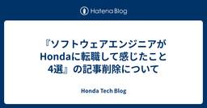
『ソフトウェアエンジニアがHondaに転職して感じたこと4選』の記事削除について 419 Honda Tech Blog
本Honda Tech Blogにて5月19日に公開した『ソフトウェアエンジニアがHondaに転職して感じたこと4選』は、しかるべき確認手順を経ずに記事が公開されたため当該記事を削除しました。予告なく当該記事を削除したことで、本ブログをご覧いただいている読者の皆様にご不便をおかけして申し訳ございません。 今後の運営改善に努めてまいります。
7日前
Pull Request ごとに S3 + CloudFront へ SPA のプレビュー環境をデプロイする 31 Classi開発者ブログ
Classi でソフトウェアエンジニアをやっている koki です。 S3 + CloudFront でホスティングしている SPA (Single Page Application) で Pull Request ごとにプレビュー環境をデプロイする仕組みを作ってみたところ、かなり体験が良かったので紹介します。 前提 Classi で提供している学習トレーニング機能には、それを裏で支えるコンテンツ管理システム ( 以下、内部 CMS ) が存在しています。 この内部 CMS については以下の記事でも簡単に紹介されているので、こちらをご参照ください。 tech.classi.jp 内部 CMS …
2日前
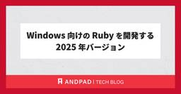
Windows 向けの Ruby を開発する 2025 年バージョン 31 ANDPAD Tech Blog
こんにちは、大阪万博に行ってきて大量のミャクミャクグッズを買ってしまい、部屋のどこをみてもミャクミャクに囲まれて暮らしている柴田です。 今日は最近力を入れている Ruby を Windows で開発するための環境についてご紹介します。 Windows 向け Ruby の歴史 Ruby を使うためには自分で Ruby インタプリタをコンパイルして作成するか、誰かが作成した Ruby インタプリタを再利用する必要があります。 近年では Docker を利用することで Ruby のバイナリにだけではなく Debian や Alpine などの Linux ディストリビューションの選択も含めてポータブ…
2日前
ECSのTask数がいつの間にか0に？Task消失事件の顛末 98 エムスリーテックブログ
【デジカルチーム ブログリレー5日目】 デジカルチームの井上 渉 (@wtr_in) です。米がなければということで、餅をよく食べています。実は餅はお正月以外も食べて良いんですよ皆さん。 さて、2024 年 7 月と結構前の話になりますが、AWS で以下のようなアップデートがありました。 aws.amazon.com このアップデートにより ECS が Task を起動する際にイメージを特定する挙動が変わったのですが、デジカルではその影響で、テスト環境の ECS Service の Task 数がいつの間に 0 になる というトラブルを経験しました。割とエッジケースなので、多くの方が遭遇するこ…
4日前
Kotlin Multiplatform (KMP) でプラットフォーム固有の実装をcommonMainで扱う2つのアプローチ 17 エムスリーテックブログ
【マルチデバイスチーム ブログリレー2日目】マルチデバイスチームでモバイルアプリエンジニアをやっている小林 ([@bakobox](https://x.com/bakobox))です。マルチデバイスチームでは複数のアプリを開発していますが、一部のアプリではKotlin Multiplatform (以下KMP)を使ってロジックの共通化を行っています。KMPを使ってアプリの開発を行っていると、プラットフォーム固有のコードを扱わなければならない場面が必ず出てきます。プラットフォーム固有の実装をcommonMainからどのように扱えるようにするかは、KMPプロジェクトにおける重要な設計課題の一つです。本記事では、この課題に対処するための主要なアプローチである、1. `expect/actual`を使った方法2. DIフレームワークの管理に乗せる方法についてご紹介いたします。また2つ目の方法では、iOS側の実装をSwiftで行う方法もご紹介いたします。
1日前
世界は新たな時代を迎えようとしている 22 Insight Edge Tech Blog
こんにちは。CINO(Chief Innovation Officer)の森です。 ここ最近、機動戦士Gundam GQuuuuuuX(ジークアクス)に始まり、SDガンダム ジージェネレーション エターナルがリリースされたことで、 久しぶりに濃密にガンダムに触れています。 ガンダムの影響を強く受け過ぎてしまっているため、本記事では、やや小難しい言い回しが増えていることご了承ください。 ※ブログタイトルは、ジークアクスのSTORY冒頭 から取っています。アイキャッチ画像は例の"キラキラ"です。 目次 はじめに バズワードのレイヤーが上がっている ノスタルジーを感じるAIエージェントブーム AIエ…
2日前

新しいブラウザ操作系エージェントのworkflow-useがかなり良さそうな予感 169 ヘッドウォータースのフィード
ヘッドウォータースのフィード
https://github.com/browser-use/workflow-useBrowser Useから新しいブラウザ操作系エージェントが登場しましためちゃくちゃ魅力的だったので紹介します。 従来のブラウザ操作系エージェントbrowser-useに限らず、従来のブラウザ操作系エージェントはユーザーからの自然言語な指令をもとにブラウザを操作します。AIエージェントは画面キャプチャ + DOMの取得 → キャプチャを解析 → クリックすべき要素を推論 → playwrightで操作をループしてタスクを行います。現在僕もよく使っているのですが、何点か課題があります。 ...
4日前
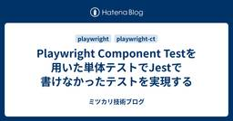
Playwright Component Testを用いた単体テストでJestで書けなかったテストを実現する 35 ミツカリ技術ブログ
ミツカリのたなしゅん(@tanashun_dev)です。 弊社で提供しているサービスの一部のアクションでドラッグアンドドロップで画面上の要素の並び替えをする機能があります。 この実装にはdnd-kitというライブラリを使っています。 dndkit.com ライブラリのおかげで実装自体はそう難しいものではありませんでしたが、意図しない変更やライブラリのアップデートによってドラッグアンドドロップの動作を壊してしまう可能性が今後つきまといます。 リリースのたびにそれをチェックするのは工数ももったいないです。 ドラッグアンドドロップが正常にできているかどうかをコードレベルで保証するために単体テストを書…
3日前

リスクベースドテストのアプローチを使って重篤なバグを早期に検出しホットフィックスを防いだ話 30 Tabelog Tech Blog
Tabelog Tech Blog
はじめに こんにちは。 飲食店向けモバイルオーダーシステム「食べログオーダー」でQAチームの職域リーダーをしている池田です。 食べログオーダーとは「お客様が自分のスマートフォンを使ってメニューを注文できる」サービスです。 今回は食べログオーダーのテストアプローチとして取り入れて成功したリスクベースドテストについてお話しします。 目次 プロジェクトの課題 リスクベースドテストの導入 リスクベースドテストについて リスクベースドテストの実施における工夫 結果と成果 QAチームが貢献できたことの考察 まとめ プロジェクトの課題 私が今回担当したプロジェクトは「食べログオーダーに外部POSのメニューを…
3日前
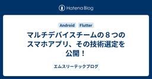
マルチデバイスチームの８つのスマホアプリ、その技術選定を公開！ 17 エムスリーテックブログ
【マルチデバイスチーム ブログリレー1日目】 エンジニアリンググループ・マルチデバイスチーム(以下、マルデバ)の星野です。 2年ほど前にスマホアプリ開発で採用している技術というブログを書きましたが、時間が経ち、採用している技術に更新があったり、新しいアプリもリリースされましたので、改めてマルデバで開発しているアプリとその技術選定について紹介します！ アプリの数が多いため、各アプリの深掘りは行わず、アプリの概要 ＋ 選定技術の紹介にとどめています。より詳しく知りたい方は方は、ぜひカジュアル面談・面接などでご質問ください！
2日前
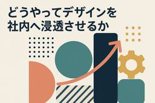
どうやってデザインを社内へ浸透させるか 16 RAKUS Developers Blog | ラクス エンジニアブログ
こんにちは、稲垣です。 先日、「読書シェア」に参加しましたので、書籍の紹介とともに表題の件について書いてみようと思います。 yumemi.connpass.com 自己紹介 書籍紹介 最後に
2日前
2人目アナリティクスエンジニアとして入社して1年が経ちました【在籍エントリ】 14 Nealle Developer's Blog
こんにちは。ニーリーのAnalyticsチームで働いている五十嵐です。普段は鹿児島からフルリモートで勤務しています。下の写真は鹿児島の日常です。この程度では誰も見向きもしません。 桜島 5月で入社1年が経ちました & 入社エントリを書くタイミングを逃してしまったので、禊の振り返り記事を書かせていただきました。 面接ではよく「テックブログ読みましたよ」と言われるらしいので、ニーリーへの入社を考えてくださっている方の参考になれば幸いです。 2024 上期（2024年5月〜6月） 2024年5月に入社し当初2週間程度はオンボーディングメニューに沿って月極駐車場やPark Directに関するドメイン…
2日前
プロダクトエンジニアとして入社後の1年を振り返る【在籍エントリ】 20 Nealle Developer's Blog
ゴールデンウィークが明け、新たな気持ちで業務に取り組まれている方も多いのではないでしょうか。 長期休暇は、日々の業務から離れて立ち止まり、これまでの歩みを振り返ったり、今後の目標を再確認したりする良い機会になりますよね。 今回、私が株式会社ニーリーに入社してちょうど1年という節目を迎えましたので、この1年間を振り返る在籍エントリーをお届けしたいと思います。 テックブログなのに技術の話じゃないのか、といったツッコミもあるかと思いますが、「妖怪テックブログ」こと菊地さんが率先して書いてくださったので、それに倣おうと思います。 妖怪テックブログについてはコチラ nealle-dev.hatenabl…
3日前
GCounterで学ぶ、CRDTによるスケーラブルな書き込み処理と結果整合性 11 CyberAgent Developers Blog | サイバーエージェント デベロッパーズブログ
はじめに こんにちは！ABEMA の広告配信システムの開発チームのバックエンドエンジニアの戸田朋花で ...
1日前
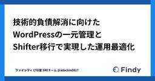
技術的負債解消に向けたWordPressの一元管理とShifter移行で実現した運用最適化 37 Findy Tech Blog
Findy Tech Blog
はじめに 皆さんこんにちは。ファインディに転職してまもなく1年を迎える、CTO室/SREチームの安達（@adachin0817）です。今回は複数のWordPressサイトをShifterへ移行しましたので、その取り組みについてご紹介します。 Shifterとは ja.getshifter.io Shifterは、WordPressサイトを静的に変換・ホスティングできるマネージドサービスです。動的に動作するWordPressをShifterがビルドし、生成されたHTML/CSS/JavaScriptの静的ファイルをCDN経由で配信する構成となっています。主なメリットは次のとおりです。 セキュリテ…
3日前
AtlasとArgoCDでDBマイグレーションの仕組みを構築してみた 18
RAKUS Developers Blog | ラクス エンジニアブログ
はじめに こんにちは！ラクスでSREをしているモリモト（2025/3に中途入社）です。 業務の中で、AtlasとArgoCDを使ってGoアプリケーションのDBマイグレーションの仕組みを新規に構築したので、その方法を書き残してみたいと思います。 はじめに 構築したフロー 実現したかったこと 1. 宣言的なスキーマファイルを管理できる 2. 宣言的なスキーマファイルからマイグレーションファイルを生成でき、それをバージョン管理できる 3. 検証環境や本番環境に対して、自動でDBマイグレーションを実行できる アーキテクチャ検討 Atlasの導入とスキーマ管理の仕組み スキーマの定義 atlasの設定フ…
3日前
GoでLuaのユニットテストを書こう 17 CyberAgent Developers Blog | サイバーエージェント デベロッパーズブログ
ABEMAの広告システムのバックエンド開発をしている黒崎 (@kuro_m88) です。 GoでLu ...
2日前
ブーメラン転職ってどうなの？実体験から語る 16 RAKUS Developers Blog | ラクス エンジニアブログ
1年前に離れた会社に、また戻ることを選びました。 PdMとして、どう考え、どう決断したのか。そのリアルな記録です。 目次 ブーメラン転職ってどうなの？実体験から語る 自己紹介 転職したときは「もう戻らないつもり」だった（けど、少しだけ迷いもあった） 新しい環境での1年は、想像よりずっと早く過ぎた ふと「もう一度、あのチームで働くのもアリかも」と思った瞬間 戻る決断に迷いはあった。でも、それ以上に理由があった 同じ会社、同じ役割。だけど、見え方は全然違っていた この3年間を経て、自分なりにわかった「働く場所の選び方」
3日前

GitHub WorkflowにClaude Codeを統合するとレビューもPRもよしなにやってくれる良い話🎉 83 株式会社マインディア テックブログのフィード
3秒まとめClaude Code GitHub Actionsを使うと、@claudeでレビューからPR作成まで全部やってくれる/install-github-app一発で導入完了。めちゃくちゃ簡単GitHub上でコミュニケーション完結するので、開発フローが超スムーズIssue → 実装計画 → PR作成まで一気通貫でサポート*この記事は８割程度がAIのサポートにより執筆されていますが、スクリーンショットや使用感はヒューマンが試し、気づいたことを書いています どんな人向けの記事？レビュー作業に時間を取られがちなエンジニアGitHub Actions...
6日前

AI時代なので、もうDDDは要らなくなりますかね？ 74 株式会社ログラス テックブログのフィード
!🐳 この記事は「Loglass Tech Blog Sprint」の92週目の記事です。2年間連続達成まで 残り14週 となりました！ DDDは今も“武器”になるのか？ここ1年でプロダクト開発の環境は大きく変わりました。AIエージェントが開発現場で“当たり前”のように使われる時代になりつつあります。そんな中で、「DDD(ドメイン駆動設計)って今の時代にも必要なの？AI時代になったらもう使わなくなるのでは？」と疑問に思う方もいるかもしれません。私はこう思います。DDDは、AI時代にこそレバレッジを効かせることができる、価値を届けるための“武器”になる。(少なくとも、あ...
6日前
消費電力から機密情報を特定する方法(DPA,CPA編) 18 ラック・セキュリティごった煮ブログ
こんにちは、or2です。 こちらの記事は消費電力から機密情報を特定する方法(SPA編)の続編です。 前編は見なくても問題ないですが、電力解析についてご興味があればぜひご覧ください。 今回は電力解析の一種、Differential Power Analysis(DPA)/Correlation Power Analysis(CPA)についての理論と実験結果をまとめたいと思います。 攻撃対象はAES暗号化機能を実装したATmega328Pです。 ※ATmega328PはArduinoに搭載されているマイコンです。 免責事項 構成 AES ECBモードについて 攻撃手法 DPAについて AES EC…
3日前
Amazon Bedrockを活用した生成AIアプリケーションにおけるセキュリティリスクと対策 61 GMO Flatt Security Blog
本稿では、Amazon Bedrock を活用して生成 AI アプリケーションを開発する際に気をつけるべきセキュリティリスクや対策について紹介します。
7日前
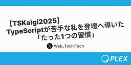
【TSKaigi2025】TypeScriptが苦手な私を登壇へと導いた「たった1つの習慣」 14 PLEX Product Team Blog
【TSKaigi2025】TypeScript苦手の私を登壇へ導いた「たった1つの習慣」の紹介記事
3日前
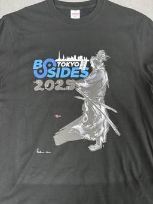
セキュリティカンファレンス「BSides Tokyo 2025」に登壇してきた話 6 NTT Communications Engineers' Blog
NTT Communications Engineers' Blog
みなさんこんにちは、イノベーションセンターの益本(@masaomi346)です。 Network Analytics for Security (以下、NA4Sec) プロジェクトのメンバーとして活動しています。 この記事では、2025年5月17日に開催されたセキュリティカンファレンスBSides Tokyo 2025で登壇したことについて紹介します。 BSides Tokyo ぜひ最後まで読んでみてください。 BSides Tokyoについて BSidesとは、情報セキュリティのコミュニティ主導で開催されているセキュリティカンファレンスです。 2025年5月時点では、1105のBSidesイ…
3日前

GeminiでdbtのDescriptionを自動補完したら、2,000件以上のメタデータ整備が1分以内で完了した話 42 LegalOn Technologies Engineering Blog
はじめに 株式会社LegalOn Technologiesでアナリティクスエンジニアをしている鈴木です。 データ活用の現場では、メタデータの品質が分析や開発の効率を大きく左右します。特に、データベースのカラム定義（description）は、データの意味や使い方を理解する上で重要な役割を果たしています。 今回は、Gemini（生成AI）を活用してBigQueryのテーブルdescriptionを半自動補完する取り組みについてご紹介します。この施策により、データの可視性・可読性が向上し、チーム全体のデータ活用効率が改善されました。
7日前
現場のAI活用希望 vs セキュリティ - 板挟みコーポレートエンジニアのためのセキュリティ・ガバナンス実践録 41 GMO Flatt Security Blog
はじめに こんにちは。GMO Flatt Security株式会社でコーポレートセキュリティエンジニアをしています、hamayanhamayanです。 様々な企業で生成AIの活用が進んでいることと思います。その流れは当社も例外ではなく、今年に入ってから、生成AIの全社的な利用、生成AIを利用した診断業務の効率化、生成AIを活用した製品開発と、怒涛のように生成AIの利活用が進んでいます。 そんな中でコーポレートエンジニアは、ビジネスの前進に必要な生成AIの利活用は止めたくない、しかし、企業の責任としてセキュリティやガバナンスは疎かにできないという板挟みの中にいると思います。私も例外ではなく様々な…
6日前
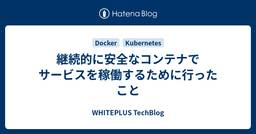
継続的に安全なコンテナでサービスを稼働するために行ったこと 41 WHITEPLUS TechBlog
WHITEPLUS TechBlog
サイバー攻撃による個人情報の流出が多数ニュースになっている状況で、お客様に安心してサービスを利用してもらうためには防御を一層高める必要があります。今回はインフラチームが主導して、Goで書かれたサービスをセキュリティが高く安全な状態で稼働できるように改善したのでその内容を紹介します。 改善前の状況 Goで書かれたサービスをDocker公式のDebianイメージを使いGKE上で稼働させていました。このDebianイメージは長年更新されておらず、バージョンはDebian 8 (Jessie) で2020年6月にEOLを迎えています。加えて脆弱性のスキャンも行っておらず、たくさんの脆弱性が入っているイ…
6日前
顧客志向なプロダクトマネジメントとは？要件定義から開発まで「本当に必要な機能」を見極める方法 38 RAKUS Developers Blog | ラクス エンジニアブログ
はじめに 楽楽勤怠開発部でPdM（プロダクトマネージャー）をしている @k0First です。 私は、ラクスが提供する「楽楽勤怠」のプロダクトマネージャー（PdM）として、日々企画・要件定義・開発推進を担当しています。 ラクスは「ITサービスで企業の成長を継続的に支援します」をミッションに掲げ、SaaSプロダクトを通じて企業の業務効率化・生産性向上に貢献する会社です。 私たちラクスが大切にしているのは、「顧客視点で価値を生む機能開発」。 ですが実際の現場では、さまざまなリクエストや要望が飛び交い、目の前の「作るべきもの」に引っ張られてしまうこともあります。 たとえば、 事業部からの要望をそのま…
6日前
開発者インタビュー: ヘンリー開発の現在地 - VPoE 兼 VPoT 戸田さん 3 株式会社ヘンリー エンジニアブログ
株式会社ヘンリー エンジニアブログ
ヘンリーは今、何を作っていて、どのような開発をしているのか。VPoE 兼 VPoTの戸田 (id:eller) さんに、プロダクトの説明から、開発体制、技術スタック、開発手法や文化までお話を伺いました。ポッドキャスト番組、ヘンリー理想駆動ラジオのエピソードから書き起こしたものです。よろしければそちらもあわせてお聞き下さい。 本エントリでは、カタカナの「ヘンリー」は株式会社ヘンリーを表し、アルファベットの"Henry"はヘンリーが開発しているプロダクトを表します。 —— 自己紹介をお願いします 戸田: 戸田ケンゴといいます。元々高校生の頃にフリーソフトウェア開発をやっていて、そこから国産ERPパ…
2日前

ジョブ実行基盤をリアーキテクチャし、コストを60%以上削減した話 36 エムスリーテックブログ
AIに生成してもらったイメージ画像 【デジカルチーム ブログリレー4日目】 こんにちは。デジカルチームでエンジニアをしている武井です。 デジカルチームでは、クラウド型電子カルテ、エムスリーデジカルを開発しています。 digikar.m3.com 今回は、非同期処理基盤のリアーキテクチャを実施し、性能も向上しつつインフラコストを60%以上削減できた話をご紹介します。
6日前
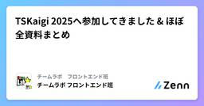
TSKaigi 2025へ参加してきました & ほぼ全資料まとめ 4 チームラボ フロントエンド班のフィード
こんにちは！チームラボフロントエンド班所属の志田と宇根です！2025 年 5 月 23-24 日、東京都 ベルサール神田にて開催された「TSKaigi 2025」に現地参加してきました。そして今回チームラボフロントエンド班からも LT 登壇者が選ばれています！本記事は 2 日間の現地参加レポートとなります。オンラインで参加されていた方や TSKaigi がどんなイベントか気になる方はぜひご覧ください。また記事の最後に公開されている資料を可能な限りまとめていますので、気になる方はご参照ください。 TSKaigi とはTSKaigi 2025 は、プログラミング言語 Typ...
3日前
Webフロントセクションのご紹介 2025 28 ドワンゴ教育サービス開発者ブログ
ドワンゴ教育サービス開発者ブログ
私たちWebフロントセクションのメンバーについてご紹介します。セクションメンバーの雰囲気やどんな働き方について、ご興味をお持ちの方は是非ご一読ください。
7日前
技術イベントに“本気のコーヒー”を。カケハシがコーヒースポンサーを続ける理由 25 KAKEHASHI Tech Blog
こんにちは、技術広報の櫛井です。カケハシではカンファレンスや勉強会などの技術イベントにおいて、「コーヒースポンサー」として高品質なコーヒーの提供を行ってきました。 カケハシは「日本の医療体験を、しなやかに。」をミッションに掲げ、患者さんのための薬局づくりのパートナーとして複合プロダクトで薬局DXをトータルサポートしているヘルステックスタートアップです。 カケハシがコーヒースポンサーにこだわっている理由、どのように実現しているのかをこのエントリではご紹介したいと思います。 人と人をつなぐ、コミュニケーションのきっかけに 私たちが技術イベントでコーヒーを提供する最大の目的は、参加者同士の交流を促進…
7日前
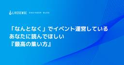
「なんとなく」でイベント運営しているあなたに読んでほしい 『最高の集い方』
3 LIVESENSE ENGINEER BLOG
こんにちは、かたいなかです。 ここ数年、ゆるSRE勉強会やyabaibuki.devなどのイベントの運営に関わらせていただくことが何度もあり、少しずつイベント運営にも慣れてきました。 一方で、現状のイベント運営では、なんとなくやっているだけで、どのようなイベント設計が良いかなどを体系的に学んだことがないため、漠然とした不安を感じていました。 そんな中、Xで『最高の集い方』という本がオススメされていたのを見かけたので、今後のイベント運営に役立てるために読んでみることにしました。 presidentstore.jp 結果、イベント運営に関わる全ての人におすすめできる最高の本だったので、この書評記事…
2日前
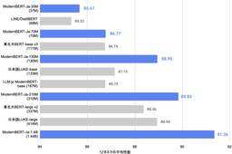
日本語ModernBERTの開発: 開発と評価編 (1/3) 3
SB Intuitions TECH BLOG
概要 こんにちは、SB Intuitions株式会社インターンの塚越です。 日本語・英語合わせて約4.4T tokensを学習した日本語ModernBERTというモデルを構築・公開しました。 本記事では、その開発過程や評価結果についてお話しします。 我々が開発した日本語ModernBERTは、30m, 70m, 130m, 310mと4つの異なるパラメータサイズをもち、それぞれのモデルが同パラメータ規模のモデルと比較して、本記事公開時点では最も高い性能を達成しています。 開発した一連のモデルはHuggingFaceにてMITライセンスのもと公開しておりますので、商用・研究用問わず自由にお使いい…
3日前

tsgoが公開。TypeScript 7向け新コンパイラのインストール手順と10倍高速化検証 19 Ubie テックブログのフィード
本日2025年5月23日、MicrosoftのTypeScriptチームは、TypeScriptのGo言語実装によるコンパイラのプレビュー版「TypeScript Native Previews」を公開しました。「tsgo」という名称の新しいコンパイラは、将来的にTypeScript 7で現在のtscコマンドを置き換えることを目指しています。公式発表によると、tsgoを使用することで型チェックやコンパイル速度が最大で10倍向上するとのことです。本記事では、tsgoを実際にインストールする手順と、本当に10倍高速化されるのかを検証します。 TypeScript 7でコンパイラがGo言...
5日前
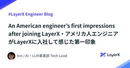
An American engineer’s first impressions after joining LayerX・アメリカ人エンジニアがLayerXに入社して感じた第一印象 18 LayerX エンジニアブログ
(日本語版は下記です） Hello, I'm Tim Mansfield, Tech Lead in LayerX's AI & LLM division. (「マンスフィールド」 which honestly is tiring to type into forms, heh.) I've been doing product development in Silicon Valley for over 25 years, working at Google and YouTube back in the 00’s, as well as serving as tech lead, engi…
7日前

AIを組織の競争力に変える、SpeeeのAIガバナンスデザイン 16 Speee DEVELOPER BLOG
こんにちは、Speeeでビジネス領域のAIガバナンスプロジェクトのオーナーをしております 長山と申します。普段はバントナー事業部で、クライアント企業のDXに伴走支援しております。また本記事でご紹介する取り組みでは、日々、「AIをもっと活用したい」という現場の声と「安全に使おう」という組織としての要請の間でバランスを取る挑戦をしています。 皆さんの組織でも、「このAIツールは使っていいの？」「この情報を入れても大丈夫？」「新しいAIツールを試したいけど申請方法が分からない...」といった声がありませんか？ ツールの進化が加速度的に進む今、組織としてAIをどう取り入れていくかは、単なるIT管理の問…
7日前

子連れで参加できるRubyKaigi 14 エス・エム・エス エンジニア テックブログ
こんにちは！カイゴジョブの開発をしております@katorieです。普段はRuby on Railsを使ってプロダクトの改善や新機能開発に取り組んでいます。 すでにこのブログでは弊社の学生支援によってRubyKaigi 2025に参加した学生の皆さんのレポートが公開されておりますが、ご覧いただけましたでしょうか？ 私からは、子連れで参加したRubyKaigi 2025についてお伝えしたい思います。あくまで私個人の感想とともに一例としてのご紹介になりますが、RubyKaigi に参加するスタイルのひとつとしてどなたかの参考になることを願っています。 なぜ子どもを連れてRubyKaigiに参加するか…
7日前

Ruby: SorbetにRBSのインラインコメント機能が追加された（翻訳） 9 TechRacho
TechRacho
概要 CC BY-NC-SA 4.0 International Deedに基づいて翻訳・公開いたします。 英語記事: Inline RBS comments support for Sorbet | Rails at Scale 原文公開日: 2025/04/24 原著者: Alexandre Terrasa CC BY-NC-SA 4.0 Deed | 表示 - 非営利 - 継承 4.0 国際 | Creative Commons Ruby: SorbetにRBSのインラインコメント機能が追加された（翻訳） Sorbetは、Shopifyにおけるコードの読み取りや理解、そしてメンテナンスを大きく改善してくれま […]The post Ruby: SorbetにRBSのインラインコメント機能が追加された（翻訳） first appeared on TechRacho.
7日前

Zustand × React Context を組み合わせたデザインパターン実践 6 DRESS CODE TECH BLOGのフィード
はじめにDress Code株式会社で直近HR Forceの開発をしている、ふるしょうです。HR領域のSaaSは、複雑なフォームの機能要件が伴うことが少なくありません。例えば、入社手続きにおける家族情報の登録など、動的フィールドの表示/非表示や編集制御、複雑な依存関係を持つ計算フィールド、再起的な階層構造、同一ページ内に複数の独立したフォームインスタンスが存在する場合の適切な状態管理が必要になります。弊社では、このような複雑なフォーム要件に対応するため、Zustand と React Context を組み合わせたアーキテクチャパターンを採用し、開発を進めています。本記事で...
7日前
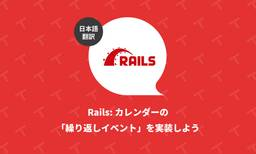
Rails: カレンダーの「繰り返しイベント」を実装しよう（翻訳） 3 TechRacho
概要 元サイトの許諾を得て翻訳・公開いたします。 英語記事: Recurring Calendar Events in Rails | Rails Designer 原文公開日: 2025/05/16 原著者: Rails Designer -- Railsフロントエンド関連記事に加えて、ViewComponentとTailwind CSSを用いた美しいUIコンポーネントを販売しています Rails: カレンダーの「繰り返しイベント」を実装しよう（翻訳） 先週、Rails DesignerのUI Componentsのv1.14をリリースしました。このリリースから、完全にカスタマイズ可能なカレンダーコンポーネント […]The post Rails: カレンダーの「繰り返しイベント」を実装しよう（翻訳） first appeared on TechRacho.
6日前

RubyKaigi 2025で託児サポートを実施しました〜準備から実施までの記録〜 3 STORES Product Blog
STORES Product Blog
こんにちは、技術広報のえんじぇるです。STORES はRubyKaigi 2025でNursery Sponsorとして、託児所の企画運営をしました。Nursery Sponsorとして協賛するのはRubyKaigi 2024に続いて2回目です。 3日間で0才〜10才までの合計23名のお子さんをお預かりし、保護者の方がRubyKaigiに集中できる環境を提供しました。本記事では実際にどのように準備したのか、どんな様子だったのかをお伝えします。カンファレンスやイベントで託児所の設置を考えている方の参考になれば幸いです。 RubyKaigi 2024の実施記録は下記からご覧ください。 produc…
6日前
Fit-to-Width , CSS Carousel など: Cybozu Frontend Weekly (2025-05-20号) 3 サイボウズ フロントエンドのフィード
こんにちは！サイボウズ株式会社フロントエンドエンジニアのsaku (@sakupi01)です。 はじめにサイボウズ社内では毎週火曜日にFrontend Weeklyと題し「一週間の間にあったフロントエンドニュースを共有する会」を開催しています。今回は、2025/05/20のFrontend Weeklyで取り上げた記事や話題を紹介します。 取り上げた記事・話題 React Compiler RC – Reacthttps://react.dev/blog/2025/04/21/react-compiler-rcReact Compiler の Release Cand...
7日前